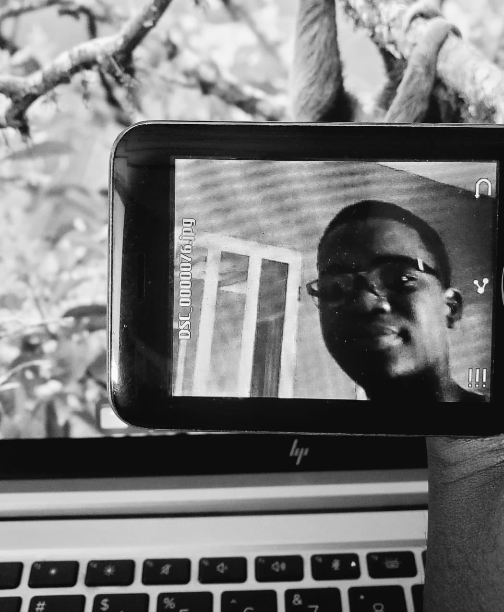

optimisation combinatoire & machine learning
combinatorial optimization & machine learning

Salut, moi c'est Rosas et j'ai ans 🤓.
Je travaille sur la résolution des problèmes de planification et d'ordonnancement appliqués à l'industrie à l'aide de l'optimisation combinatoire et du machine learning.
Je m'intéresse également au traitement automatique des langues et de la parole pour les langues à faibles ressources, notamment le fon, ainsi qu'à leurs applications pour favoriser une meilleure intégration des communautés encore peu desservies par les technologies numériques.
Je poursuis actuellement un bachelor en Informatique, spécialité Intelligence Artificielle, à l'Université d'Abomey-Calavi au Bénin 🇧🇯.
Hi, my name is Rosas and I am years old 🤓.
I worked on solving industrial planning and scheduling problems using combinatorial optimization and machine learning.
I am also interested in speech and language processing for low-resource languages, particularly Fon, and in their applications to improve digital inclusion for communities that remain underserved by modern technologies.
I am currently pursuing a Bachelor's degree in Computer Science, specializing in Artificial Intelligence at the University of Abomey-Calavi in Bénin 🇧🇯.